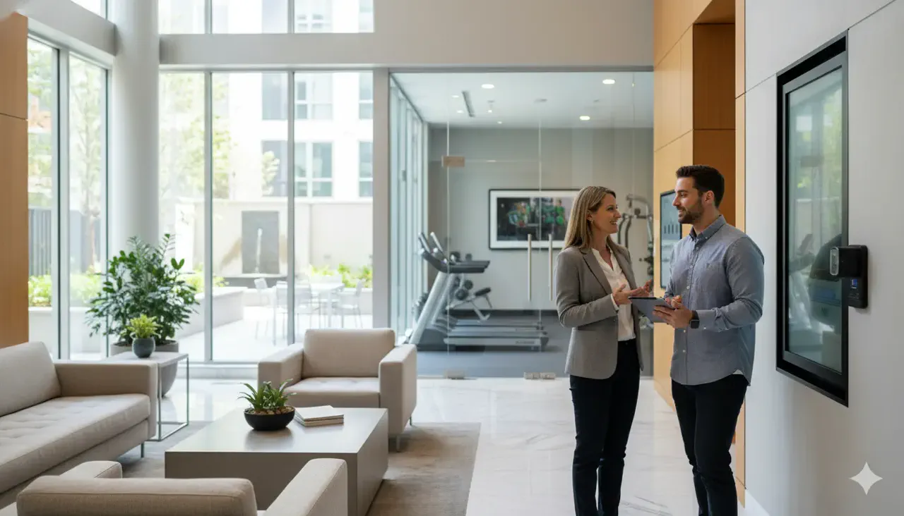

Cartera sin seguimiento
La falta de segmentación y trazabilidad dificulta actuar a tiempo sobre obligaciones pendientes.
Fortalecemos el control financiero, administrativo, documental y operativo de propiedades horizontales residenciales, comerciales y mixtas.

La cartera, el presupuesto, los archivos y la operación necesitan continuidad, claridad y controles que puedan entender el consejo y la asamblea.
La falta de segmentación y trazabilidad dificulta actuar a tiempo sobre obligaciones pendientes.
Informes tardíos reducen la capacidad del consejo para leer y controlar la gestión.
Desviaciones sin explicación afectan prioridades, mantenimientos y confianza.
Actas, contratos y soportes dispersos ponen en riesgo la continuidad administrativa.
Cuando el conocimiento vive en una persona, los cambios generan pérdida de contexto.
La información técnica sin narrativa ejecutiva dificulta decidir y comunicar.
Cada alcance se define después de entender el contexto. Estos frentes pueden contratarse de forma independiente o coordinada.
Organización de la operación, proveedores, compromisos y atención a los órganos de administración.
Contabilidad organizada y reportes periódicos para administración, consejo y asamblea.
Revisión de procesos, presupuesto, contratación y controles relevantes para la copropiedad.
Fiscalización y acompañamiento profesional según las necesidades y obligaciones de la copropiedad.
Organización, clasificación y acceso controlado a la memoria documental de la copropiedad.
Herramientas y automatizaciones para reducir tareas manuales y mejorar el seguimiento.
Las fases se ajustan al alcance; la lógica se mantiene: comprender, priorizar, ejecutar con evidencia y cerrar con próximos pasos claros.
El valor depende del punto de partida, el alcance y la participación de la organización. El objetivo es mejorar control, visibilidad y capacidad de acción.
Reportes orientados a los asuntos que requieren atención y decisión.
Mayor trazabilidad sobre presupuesto, cartera y soportes.
Información organizada para cambios de administración y revisiones.
Consejo y administración con responsabilidades y seguimiento visibles.
Procesos definidos para reducir improvisación y reprocesos.
Identificación oportuna de brechas administrativas, contables y operativas.
Adaptamos el lenguaje y los entregables para que la información sea útil tanto en la operación como en los espacios de dirección.
Apoyo para organizar la operación y presentar información clara.
Visibilidad independiente para supervisar y decidir.
Servicios adaptados a entornos residenciales, comerciales y mixtos.
Información comprensible sobre gestión, recursos y prioridades.
Si su caso requiere una respuesta específica, conversemos sobre el contexto.
Se revisan el tipo y tamaño de la copropiedad, el alcance requerido, el estado de la información, la periodicidad y las responsabilidades esperadas. Con ese entendimiento se prepara una propuesta.
Sí. El enfoque se adapta a copropiedades residenciales, comerciales o mixtas, considerando su operación y órganos de administración.
Sí. Los servicios pueden definirse por línea o integrarse cuando la necesidad requiere coordinación entre varias especialidades.
Generalmente se revisan estados financieros, presupuesto, cartera, actas, contratos, informes y procedimientos. La lista se ajusta al servicio solicitado.
Sí. Podemos apoyar el inventario, la recepción de información, la identificación de pendientes y la organización de la transición dentro del alcance acordado.
Según el servicio, recibe informes ejecutivos, asuntos priorizados, soportes, recomendaciones y seguimiento a compromisos.
Sí. La independencia es esencial para ejercer la revisión y comunicar conclusiones a los órganos correspondientes.
Puede combinar trabajo remoto y presencial según el alcance, la disponibilidad documental y las necesidades de la copropiedad.
La información se limita al equipo y alcance autorizados, con criterios de acceso, custodia y confidencialidad acordados con la copropiedad.
Depende del estado inicial, la calidad de la información y el alcance. La propuesta define fases, responsables y un cronograma estimado.
Una conversación inicial permite entender el contexto, precisar el alcance y definir si podemos aportar valor.